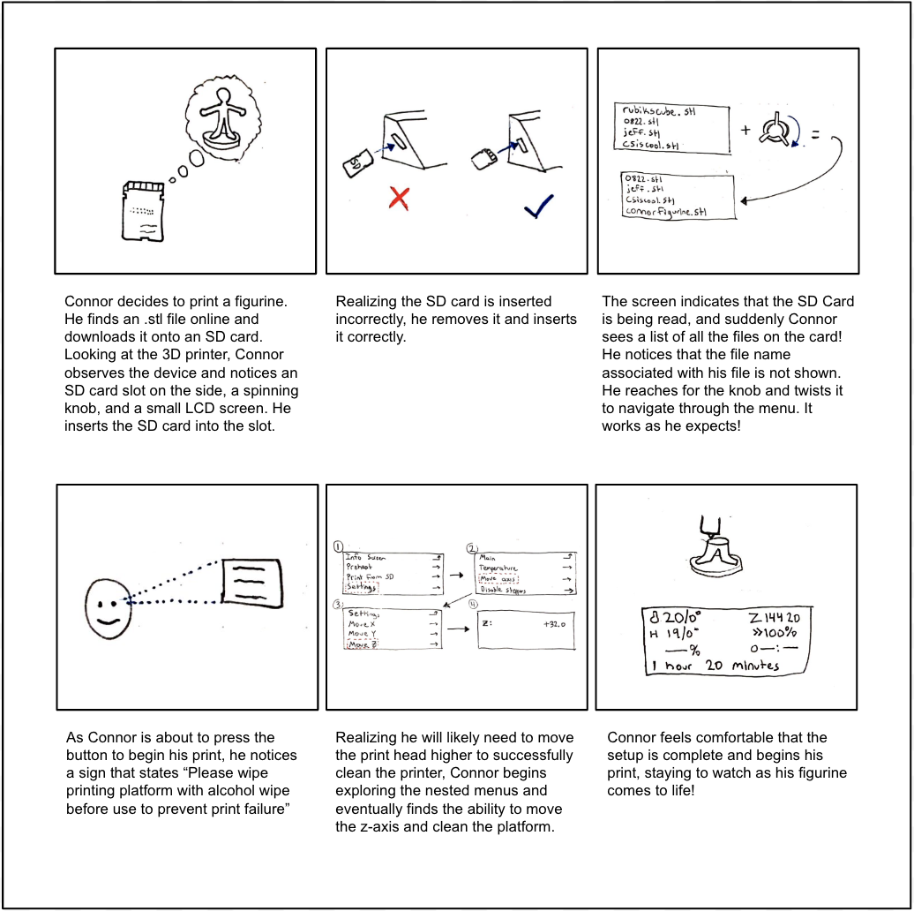

Personas & Storyboarding
3D printers are incredible! Seemingly like magic, you can watch a figurine, closet hook, or full fledged prototype come to life as a tangible object. In recent years, these devices have become globally accessible to the public in public libraries, universities, maker spaces, and more.
This interface for a Prusa 3D printer is designed to be both simple and user-friendly. The four main components handle all tasks from selecting print settings, loading and changing filament, manually controlling printer components for cleaning, and troubleshooting when prints fail.
User Observations
Key Behaviors Exhibited By Users
Interview Questions
Personas
Persona A represents Nicolette, a Mechanical Engineering student who is experienced with 3D printers
Key problem(s): Unfamiliar with more complex troubleshooting actions
Persona A represents the users of this interface as a committed user to the device who has experience and is well versed in many of the possible tasks, but not all of them
Persona B represents Connor, a Computer Science student who is NOT experienced with 3D printers
Key problem(s): Never used the interface before and nervous about messing up his print or the printer
Persona B represents the users of this interface as a novice user who is just trying out a 3D printer (or this specific 3D printer for the first time). This is a critical user because their experience with the interface at this stage can have a large impact on their decision to continue to use these devices
Storyboard
This storyboard represents the journey of Persona B (Connor)
